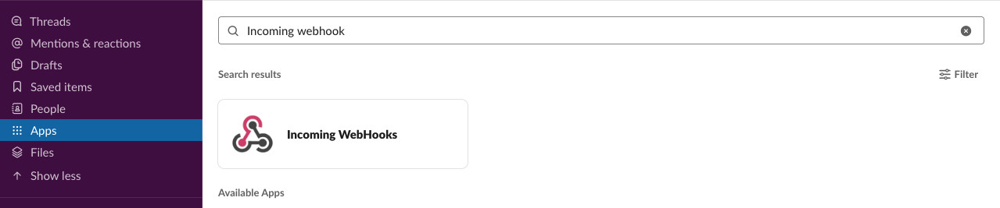
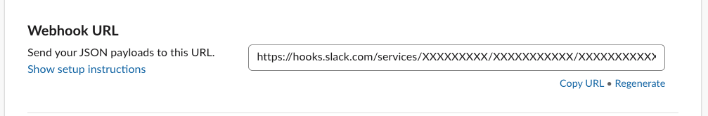
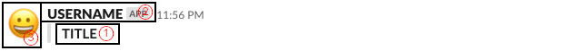
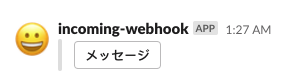

SLACK
はじめに
グループチャットアプリケーションSlack（スラック）に対して通知を送る機能を利用する事が可能です。
事前準備
「Incoming WebHooks」アプリの有効化
SLACKに対してメッセージを送信する前に、事前に「Incoming WebHooks」 アプリを有効化する必要があります。
アプリの有効化
SLACKの画面から、以下の手順通りに実施する事で、「Incoming WebHooks」アプリの有効化が可能です。
Incoming WebHooks の有効化 
- Slackアプリから、「Apps」をクリック
- 検索ボックスに、「Incoming WebHooks」と入力
- 「View in App Directory」をクリック
- ブラウザが開いたページで「Add to Slack」ボタンをクリック
通知先のURLを取得する
「Incoming WebHooks」アプリの有効化後にリダイレクトされるWebページで、 通知先のURLを確認する事が可能です。
通知先のURL確認 
SLACKにメッセージを送信する
SLACKにメッセージを送信する際には、環境変数として渡す方法、オプションとして渡す方法があります。
export SLACK_WEBHOOK_URL=[SLACK 通知用URL] noct slack [CHANNEL] [TITLE] [USERNAME] [ICON_EMOJI]
noct slack [CHANNEL] [TITLE] [USERNAME] [ICON_EMOJI] --url [SLACK 通知用URL]
コマンド引数
SLACKにメッセージを送信した際には以下のようにSLACK側に通知メッセージが送信されます。
SLACKへ通知メッセージの見え方 
| コマンド引数 | 説明 | |
|---|---|---|
| CHANNEL | 送信するSLACKのチャネル名 | |
| ① | TITLE | タイトル名 |
| ② | USERNAME | SLACK通知の表示名を変更します |
| ③ | ICON_EMOJI | SLACK通知の表示アイコンを変更します |
アイコンを変更する
SLACKを使用して、通知を行う際にアイコンを変更する事が可能です。複数の用途の異なる通知を行う際には、 アイコンを変更する事で容易に、何を目的とした通知であるかを、確認する事が可能です。 以下にアイコン変更の際に必要な、表示コードの例を示します。
| 絵文字 | 表示コード |
|---|---|
| 😀 | :grinning: |
| 😁 | :grin: |
| 😂 | :joy: |
オプション
URL付きボタンを送信する
noct slack [チャネル名] --buttons "メッセージ:ボタンを入力した際に遷移するURL" --url [SLACK 通知用URL]
noct slack [チャネル名] --buttons "メッセージ:https://example.com/" --url [SLACK 通知用URL]
URL付きのボタンを送信
